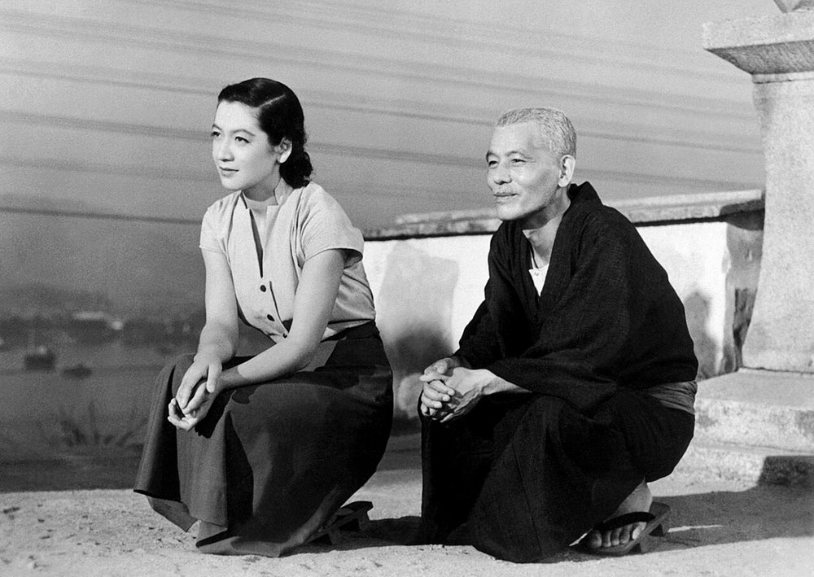

Tokyo Story, Still (Setsuko Hara and Chishū Ryū)
Yasujirō Ozu · 1953 · Film still, black and white
In copyright. Look and learn: shown for study, not for download.
Yasujirō Ozu and Kōgo Noda wrote the script over 103 days in an inn at Chigasaki, then spent another month with the cinematographer Yūharu Atsuta scouting locations in Tokyo and Onomichi. Of the main cast only Chishū Ryū, Setsuko Hara and Kyōko Kagawa went to Onomichi for the location filming. Hara and Ryū are the two seen here.